Understanding
Uncovering business goals, project scope, and key success metrics.
Portfolio 2026
UI/UX • Systems • Front-End • AI-Assisted
Connecting system architecture, purposeful design, and front-end execution—leveraging AI to accelerate web development and workflow efficiency without compromising human judgment or craft.
Who I Am
Hi, I'm Ada. I specialize in website design, brand graphics, and front-end development. Beyond visual aesthetics, I architect digital systems on established infrastructure—transforming complex business workflows into intuitive, beautifully engineered products.
My technical background spans full-lifecycle digital product delivery. I build custom web interfaces, construct backend CMS modules for dynamic content management, conduct pre-launch User Acceptance Testing (UAT), and ensure mobile apps meet the latest Google Play Console compliance standards. Additionally, I mentor interning developers—translating high-level project strategy into daily tasks and technical guidance.
I view AI as a strategic co-pilot. I leverage AI tools to streamline site audits, prototype revamps, accelerate front-end coding, and navigate complex store compliance requirements—always maintaining human craft, critical oversight, and final technical judgment over every deliverable.
Capabilities
Collaborations
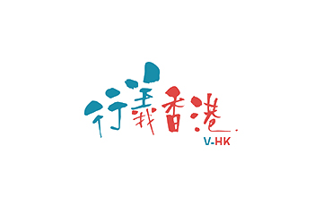
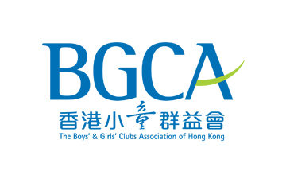
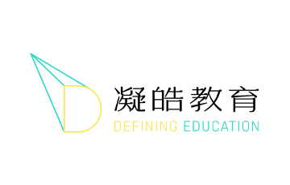
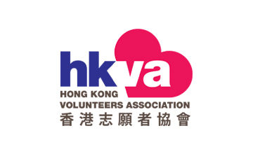
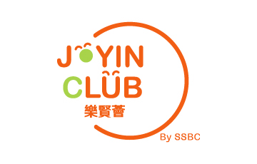
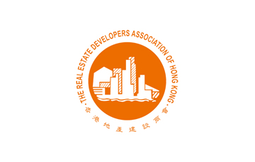
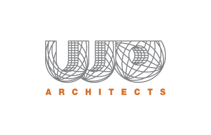
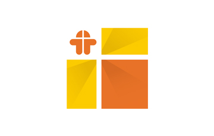
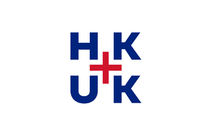
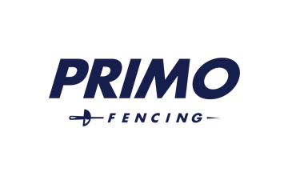
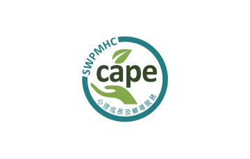
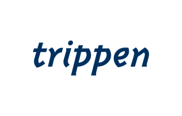
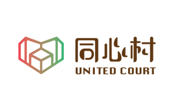
Method
A structured, iterative process to deliver meaningful results.
Uncovering business goals, project scope, and key success metrics.
Analyzing user needs, market landscapes, and strategic benchmarks.
Creating visual identity, high-fidelity UI layouts, and front-end prototypes.
Evaluating usability, gathering stakeholder feedback, and identifying edge cases.
Refining details, polishing code/pixels, and iterating until goals are met.
Final deployment, asset delivery, and post-launch monitoring.
Selected Projects
Two dedicated web portals built to streamline volunteer engagement and organizer management for the 2025 National Games.
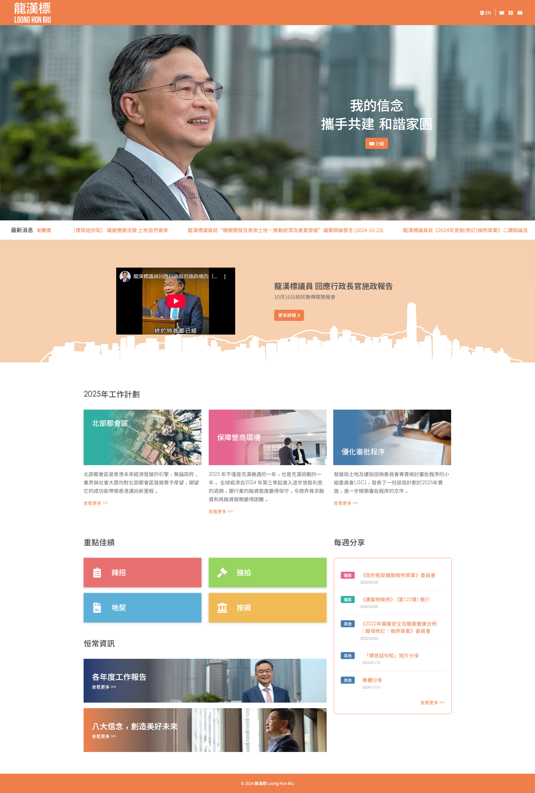
A clean, accessible portfolio and archive website for former LegCo Member Louis Loong, built on a custom company CMS for effortless content updates.
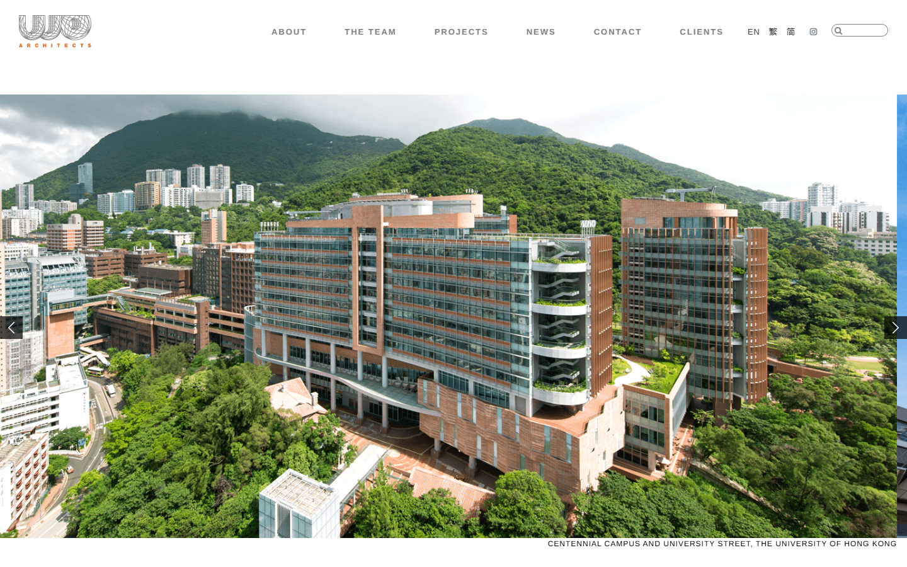
A high-precision corporate website for a leading architectural firm, built to strict client design specifications with tailored responsive CSS/JS overrides.
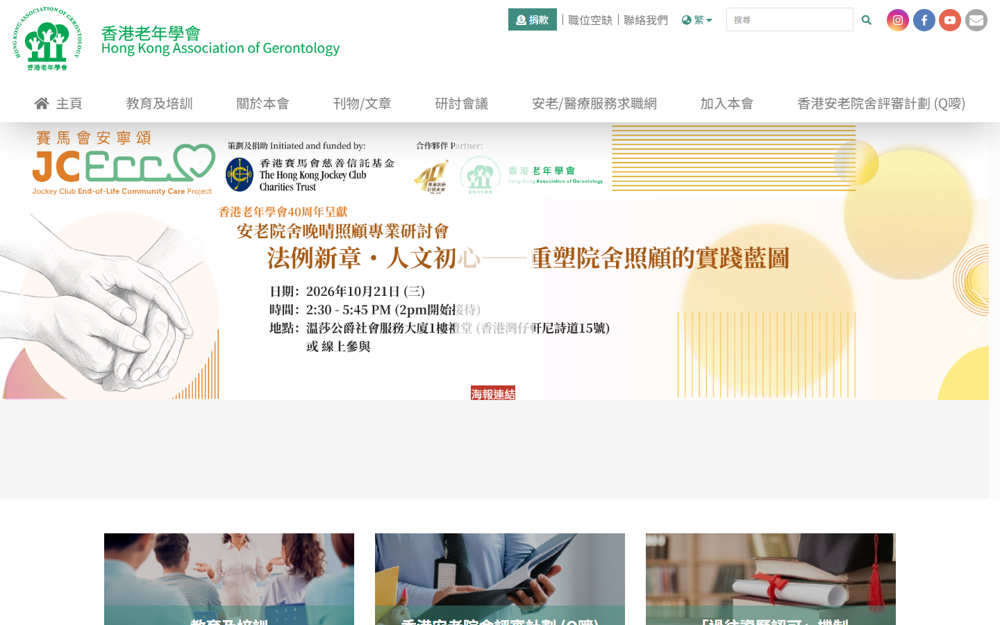
An accessible, information-dense portal for an NGO serving the elderly and care-seekers, featuring structured dynamic directories for care homes and job listings.
Brand visual identity and geometric logo design for an on-demand marketplace connecting event organizers with creative talent.
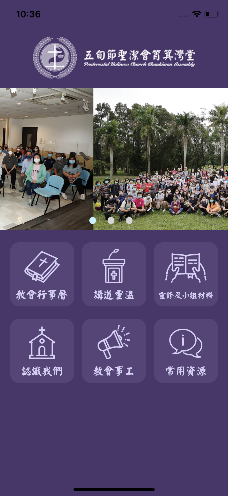
A collection of mobile application design projects focusing on standardized design systems, intuitive multi-step workflows, and user-centered strategy.
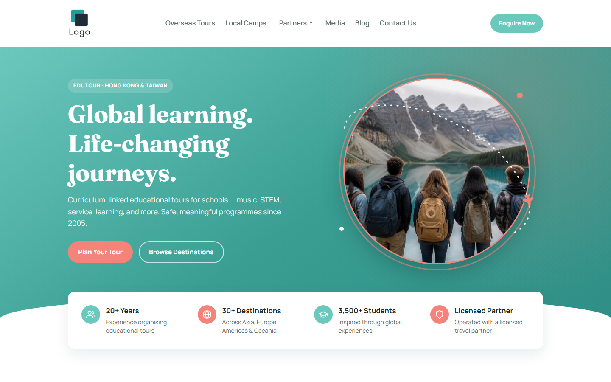
Reviewed live websites, combined human findings with AI to produce structured audit reports, then generated revamp prototypes—from homepage concepts to multi-page flows such as sermon archive, calendar, and venue booking—so stakeholders could see a clearer direction before rebuild.
Contact
Interested in collaborating or have a project in mind? Feel free to reach out.